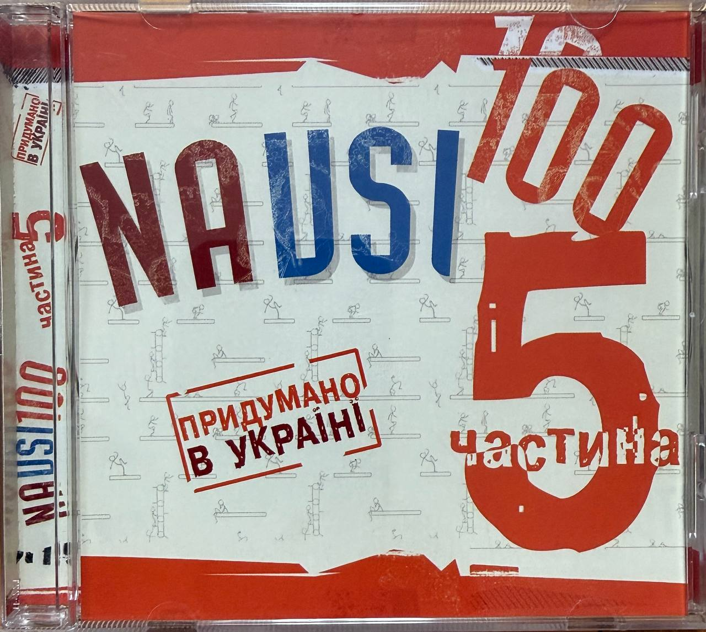

Documents
The Documents section documents archival materials related to the artistic career of Ana Danch. It includes certificates, diplomas, concert programmes, promotional materials, official documents, and other historical records.
Materials documenting earlier periods of her career may appear under her birth name, Uliana Latyk, or under the professional names Lyana Novak and Liana Novak. These materials form part of the documented artistic history of the same person now known professionally as Ana Danch.
Contents
Each archival item is presented as an individual archival record with descriptive information and available source details.
Archive Materials

NAVSI100, Part 5 (2006) – Uliana Latyk Compilation Appearance